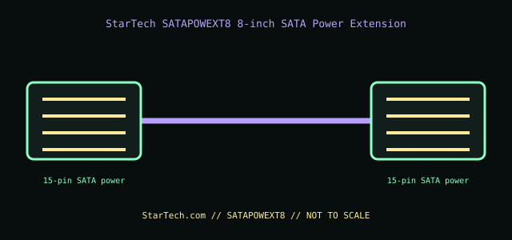

[ INTERNAL PC POWER CABLE // MODEL-SPECIFIC RECORD ]
StarTech SATAPOWEXT8 8-inch SATA Power Extension
StarTech.com manufacturer part SATAPOWEXT8. This record documents only this specified cable assembly; connector fit is not evidence of a matching pinout or PSU compatibility.

PSU SAFETY: Modular PSU-side cable pinouts are proprietary and model-family-specific. Never substitute a modular cable by brand, connector fit, color, or appearance; use only the exact PSU maker-approved cable for the exact PSU model and revision.
Manufacturer specifications
| Manufacturer part | StarTech.com SATAPOWEXT8 |
|---|---|
| Connector / pin count | One 15-contact SATA power plug to one 15-contact SATA power receptacle. |
| Wire gauge / length | 18 AWG; 8 in (203.2 mm). |
| Compatible PSU family | Standard SATA power device-end connector on an ATX PSU lead, for SATA drives/peripherals. If the PSU is modular, keep the exact OEM PSU-side harness and use this only at its standardized SATA device-end connector; no modular cable interchangeability is implied. |
Power and safety caveats
For a SATA-powered device within the PSU and original harness ratings. This extension does not create an additional PSU rail or increase current capacity; do not overload a daisy-chain and do not use the SATA power interface for a GPU adapter.
Case clearance and routing
The extension body is 8 in long. Confirm reach to the intended drive and reserve room for the connector latch and a non-strained bend; avoid pinching at the tray or panel and keep clear of fan blades.
Manufacturer specifications and manuals
- StarTech.com — SATAPOWEXT8 product pageManufacturer SKU, connector, and 8-inch SATA power extension details.
- StarTech.com — SATAPOWEXT8 datasheet (PDF)Manufacturer technical sheet for SATA power connector count, length, and construction.
Use current manufacturer documentation for exact model revisions and installation. This archive illustration is a connector-identification schematic, not an electrical pinout.